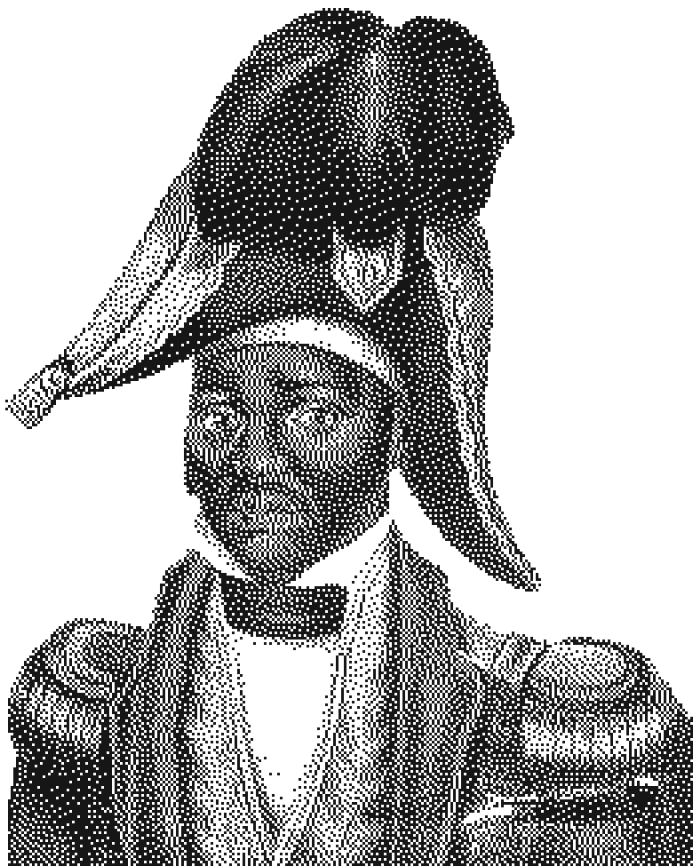
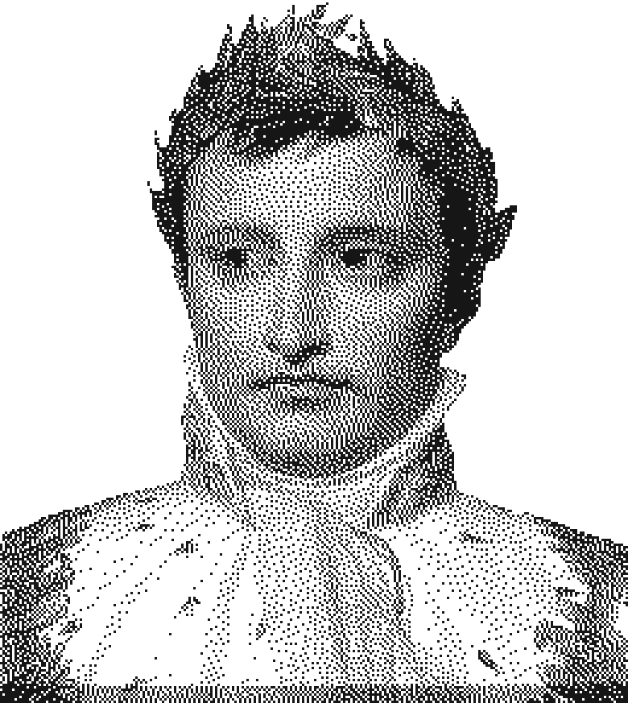
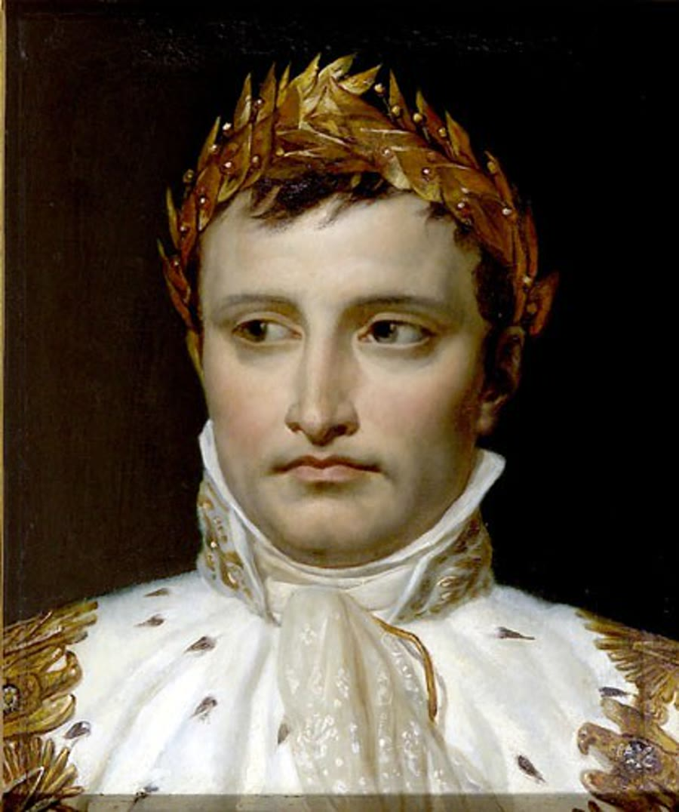

1791

LouvertureChef de la révolution
Saint-Domingue

BonapartePremier consul de France
France
Jean-Jacques
DessalinesGénéral en chef
DessalinesGénéral en chef
Armée indigène
VertièresIllustration : J. Suchodolski, 1845
konvwa.shop